Durante muchos años en nuestro barrio no se han llevado a cabo nuevas infraestructuras ni se han renovado
las existentes, que se han ido deteriorando con el paso de los años.
Para mejorar esta situación
¡NECESITAMOS TU AYUDA!
Nuestros objetivos
Crear unidad entre las personas residentes en
la zona.
Representar a las personas residentes en la zona y defender los
intereses generales de las
mismas.
Informar y apoyar a a las personas residentes en la zona en
cuestiones de interés general.

Intentar que se mejoren las infraestructuras del barrio.

Exigir al Ayuntamiento la mejora de la seguridad de nuestra zona, la
limpieza de las
calles y acerados del barrio.
Realizar actividades culturales, infantiles, cursos, talleres...,
que den vida a la zona.
Nuestras formas de contacto